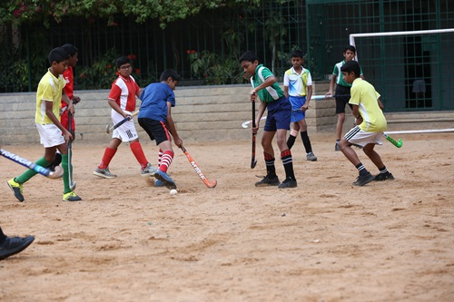

Choosing a school for your child is a serious undertaking. We urge you to take time out to visit our school, meet our administrators and understand the particular ethos of St Joseph’s Boys’ High School.
Founded by fathers of the Society of Jesus, a Roman Catholic order of priests, our school carries almost 500 years of pedagogic history. Jesuit educational institutions around the world groom pupils to become good citizens and valued members of society who will make a positive difference.
We take our role as spiritual guides earnestly. Our education rests on inculcating sound moral values in a liberal and pluralistic atmosphere.We celebrate all festivals and hold an annual Harmony Week - with readings in multiple faiths.
We are affiliated to the Council for Indian Secondary Certificate Examinations (CISCE), which offers the Std 10 ICSE exam (Indian Certificate of Secondary Education) and Std 12 ISC exam (Indian School Certificate). Please read more under Curriculum. Facilities and Resources
Our school offers excellent academic instruction; our Board exam results are well above average and our students fare well in competitive exams. We strongly believe that a good education must give equal importance to co curricular and extra curricular activities. Every academic subject has a Club to explore the subject in-depth in a small group, and students can choose which club to join. We have annual festivals on science and technology such as Transcendence and Eukranium as well as commerce fest Bifrost which our senior students help organise and execute. Our Model United Nations (MUN) is in its 6th edition and highly regarded; our MUN team has travelled abroad to participate successfully. Phenomenon is our two-day cultural fest with interschool competitions in dance, music, photography, creative writing, debating and filmmaking among others. Please read more
Co Curricular.
Our school is well known for sporting achievements and many international sporting legends – in cricket, hockey, badminton and swimming – are from here. We allow our students to participate widely, and no subject teacher will grudge an extra class for catching up, to a sportsman. Please read more Sports.
We share your concerns for safety and have an army of CCTV cameras in the school, monitored in our Principal’s office. Our staff is annually trained in POCSO and other guidelines and no classroom or area is completely sealed from view.
We are grateful for your interest in our school. If you find the above is in sync with your aspirations for your child, please come visit us and take our admission form.
School Fests
Sports
St Joseph's has a long and glorious tradition of excellence in sports. Walk into school on any given day and you will see our sportsmen, kitted out, playing on the grounds or ready to travel for matches. Many international and national players have been groomed in these very grounds.
Sporting technique and sportsmanship are inculcated from a very young age as we believe that the discipline from sports and the virtue of sportsmanship can be applied anywhere in life. So sport is given due recognition and importance in everyday school life. Physical Education teachers and coaches together ensure that Josephites of all ages get the best training and experience. Regular inter house and inter school matches are the groundwork for state and national level debuts. Each sport has a Club and coaches to extend full support; teamwork, communication, leadership and networking are some of the takeaways from joining a club.
Cricket
Cricket is a very popular sport in our school, and we have a roster of international players - Rahul Dravid, Robin Utthappa and others - whose sporting careers were established here. The Loyola Sports Complex houses an indoor cricket pitch, testimony to the legendary status of the game in SJBHS. During the summer of 2015, the cricket grounds on MG Road saw an upgradation to turf pitches. Regular practice sessions begin with the summer camps and continue over the weekend, right through the year.
Hockey

Our school is synonymous with India's national game – Hockey. We host two prestigious inter school hockey tournaments: the Eric Vaz Memorial Tournament (U-14) and the Centenary Hockey Shield (U-16) - in the month of July. These matches are keenly contested by Bangalore schools and are played in the city stadium. Our senior boys are allowed out for the finals, to watch and cheer. A number of Hockey champions - Vece Paes, Sandeep Somesh, Anil Aldrin and many others have represented India both at the national and international level.
Football
In a boys’ school, Football cannot but be popular! We offer excellent coaching round the year. Teams play both inter house and inter school matches, gaining invaluable practice. Coaching sessions, conducted by the Southern Blues Foundation (SBF), lays emphasis on endurance, flexibility, tactical training and goal keeping.
Basketball
Budding Basketball enthusiasts of SJBHS now have world class facilities - the Loyola Sports Complex boasts of an Indoor Basketball Court with imported synthetic rubber flooring and imported fibreglass boards. In addition, there are outdoor concrete courts set to international standards' measurement and design.
Badminton
The Loyola Sports Complex houses an indoor Badminton Court which caters to the needs of Badminton enthusiasts. International badminton ace – Anup Sridhar is an old boy. In the regular timetable the club time can be used to play Badminton and there is extra coaching during the weekends.
Table Tennis,Carrom and Chess
Table Tennis, Carrom and Chess are very popular games and the Loyola Sports Complex is home to all of them. There are multiple TT tables and students are first taught the basic strokes in TT, after a round of warm-up exercises. In the Carrom and Chess rooms, you can see our boys practising with utmost concentration. There is plenty of room and facilities for many players to play simultaneously and enjoy competitve matches, challenges and tournaments.
Swimming
Our school has produced national and international swimmers : Rehan Poncha, Hakim Habibullah among others. Our Aquatic Meets are popular across the city as not many schools can boast a swimming pool, open through the year. Swimming has received a big boost with the new 25mt heated pool, housed in the Loyola Sports Complex.
Facilities
In our school, every student has access to Multimedia Classrooms, modern Science Laboratories, multiple Audio Visual Rooms, Music rooms, Computer Labs and a Library with books, magazines and periodicals for all ages. We believe that students develop at their own pace and so we also provide a Resource Room for slow learners.
Our playing fields are watered every day, and we have an outdoor hockey practice turf area, a Basketball Court (cement) and most critically, a separate Play Area for Pre Primary Boys to keep them safe. Our Sports Complex is on multiple levels with an indoor heated Swimming Pool, Badminton Courts, Table Tennis, Carrom and Chess and Basketball (synthetic).
In keeping with the demands of modern times, we offer Counselling to all our students and we have three full time counsellors on board. A Chapel on the school premises adds the spiritual dimension to their growth. The school Auditorium, Canteen and Food Court, along with a well staffed Infirmary complete the picture.
School buses ply on 9 routes through the city, ferrying students and staff every working day.
Alumni
The St Joseph’s Old Boys’ Association was formed in 1918. Today it stands at a 7,000 strong membership across the world. Through the year, the OBA works to support the school in multiple ways - generously giving back to their alma mater
The process to form the Old Boys' Association (OBA) was initiated in 1901 but it took formal shape only in 1918, after the war. The First General Body Meeting was held in 1919 and there was no looking back from then onwards. With a 7,000 thousand strong membership today, the OBA has chapters in four continents. The major overseas chapters are North America (US and Canada), Middle East, UK, Australia and Singapore. In India, OBA chapters are running in Kerala, Coorg, Goa and most recently, Delhi.
Between 2001 and 2006, the OBA played a significant role in funding the construction of the new school building. The OBA also supported the School in the construction of its modern Sports Complex in 2009, with facilities such as an indoor temperature controlled swimming pool, an indoor cricket pitch with bowling machines, airgun shooting area, badminton courts, indoor basketball, snooker and table tennis.
The OBA undertakes many activities to benefit the students and staff of the school:
Academic Scholarships for Needy Students
Academic Prizes for Students
Sports Scholarships and Prizes for students of the School
Mid-day meal scheme for Needy Students
Health and Accident Insurance for Teaching and Non-Teaching staff
Teacher Training Programmes
Career Day and Career Mentoring for the students of Std 10 to Std 12
Innovation Lab for the students of Std 8 to Std 12
The OBA Buzz – inter-house cultural competitions conducted in the School
Josephite Excellence in Sports (JOSEXCEL) - honouring sporting achievers - Old Boys as well as current students of the School
Prestige OBA Golf Tournament
Inter-Batch and other Sporting Competitions for Old Boys Annual Awards presented by the OBA
OBA Lifetime Achievement Award
OBA Significant Achievement Awards St. Joseph's Old Boys have made a mark by scaling the highest levels of excellence in several walks of life around the world.
Other Old Boy achievers in sports include: Robin Uthappa, Sadanand Vishwanath (Cricket), Albert Shaw, Anil Aldrin, Sandeep Somesh (Hockey), Hakimuddin Habibulla, Rehan Poncha (Swimming), current Thomas Cup Captain Anup Sridhar (Badminton), C S Santosh (ace motorcycle rallyist), among many others.
Overview of Achievements by Old Boys: 9 Olympians Several High Ranking Officers in the Indian Armed Forces Several Successful Social Entrepreneurs 4 Captains of Indian National Sports teams Over 60 Members of the Catholic priesthood.
Clubs
Abacus Club
The objective of this club is to teach students the abacus method and to master counting using beads. Students of Stds 1 and 2 participate in this club. They are expected to grasp the basic methods of mathematical operations on the abacus with both hands and translate the numbers into beads and beads into numbers.
Dance Club
The Dance Club is conducted for Stds 1 to 4 by the Lourd Vijay Dance Academy. The dance club gets our primary students to move in rhythm, and is popular among the junior Josephites. The choreographers from Lourd Vijay’s Dance Academy teach the basics of free style, contemporary dance and Bollywood.
Scouts Club
The Scouts Club has been increasing in size over the past few years under the guidance of the scoutmaster Mr. J. Vincent. There are six levels which students need to complete in order to become full-fledged scouts. The different levels are Pravesh, Pratham, Dhruthiya Thruthiya, Rajya Puraskar (state award) and Rastrapathi Award (President's Award). The young scouts work energetically to achieve the highest award.
Literary club
In the Literary Club, activities such as reading, tongue twisters, idioms and proverbs and quizzes are engaged with in an effort to expand the student’s vocabulary and literary skills. The club is for Stds 7 to 10 and is conducted by teachers of the English department.
History Club
Members of the History Club visit places of historical interest in and around the city: the statue of Queen Victoria, the High Court and Sir Mark Cubbon’s statue. Club periods are spent in reading reference books and watching historical movies under the guidance of History teacher Mrs Gowri Mirlay Achanta and Mrs. Jessy Tharakan.
Art Club
Art is one of the most effective forms of learning and communication. It also provides a basis for other creative activities such as reading and writing. The Art Club caters to students of Stds 1 to 6. The teachers of the Art department and other staff members who are passionate about art have carefully designed a curriculum catering to different age groups.
Cookery Club
The Cookery Club for Std 7 aims to get students to appreciate and acknowledge the details and planning of a good meal at home. A theoretical session followed by a practical session makes this club a learning hub for nutrition and knowledge about what we eat. A variety of dishes are tried out and learnt.
Young Innovators Club
The Young Innovators Club at SJBHS has helped students become more creative and improve problem solving skills. It has also helped students understand the concept of astronomy in a simple yet interesting way. An important event of this club was the lunar watch - a theoretical cum practical session on the dynamics of earth and moon.
Robotics Club
This club introduces to beginners the complex field of robotics. Activities such as the basics of Arduino programming, the theory behind such concepts and practical demonstrations are included.
NCC Club
This club conducted by Mr. Deepak Xavier focuses on inculcating discipline and team work amongst the students. It is one of the oldest clubs in the school.
Expressions Club
This club at SJBHS has taught students how to impersonate literary and other characters and voice modulation. It has helped build a positive attitude towards public speaking and aims to eliminate fear regarding this essential skill.
Public Speaking and Dramatics Club
The Public Speaking and Dramatics Club aims to instil in its participants a passion for theatre, literature and team spirit. Boys are encouraged to participate in a number of public speaking activities and theatre games that foster team spirit and kinship. Boys are taught to speak confidently and engagingly to a group of people, and to enjoy it!